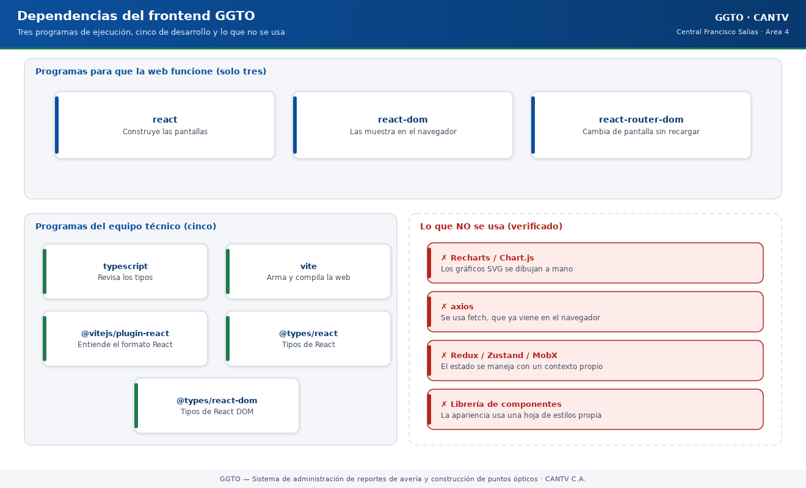

Sistema de administración de reportes de avería y construcción de puntos ópticos
Manual literal · DependenciasDependencias del frontend GGTO
Manual para todo público. Explica qué piezas de software usa la web de GGTO. Una "dependencia" es un programa ya hecho que el sistema reutiliza. La web de GGTO tiene una virtud poco común: depende de muy pocas cosas, y eso la hace más segura y más fácil de mantener.
Manual para todo público. Explica qué piezas de software usa la web de GGTO. Una "dependencia" es un programa ya hecho que el sistema reutiliza. La web de GGTO tiene una virtud poco común: depende de muy pocas cosas, y eso la hace más segura y más fácil de mantener.
1Empezar en 5 minutos
- La web usa solo tres programas para funcionar: React, React DOM y React Router. Nada más.
- Sí tiene un archivo de versiones exactas (
package-lock.json). Eso significa que la web se construye siempre igual, en cualquier computadora. Es una ventaja frente al motor, que todavía no lo tiene. - Los gráficos de MONITOREO no usan ninguna librería externa. Se dibujan a mano. Por eso no verás Recharts ni Chart.js en la lista, aunque documentos antiguos los mencionaran.
- Los tres comandos que existen son
dev,buildypreview. El más importante esbuild: primero revisa errores y, solo si todo está bien, arma la versión final. - Todas las licencias se pueden verificar. React, React DOM, React Router y Vite son MIT; TypeScript es Apache-2.0. No hay licencias desconocidas en la web.

Código del gráfico (Mermaid)
flowchart TB
subgraph Ejecucion["Tres programas para que la web funcione"]
R["react<br/>construye las pantallas"]
RD["react-dom<br/>las muestra en el navegador"]
RR["react-router-dom<br/>cambia de pantalla"]
end
subgraph Desarrollo["Cinco programas del equipo técnico"]
TS["typescript<br/>revisa los tipos"]
V["vite<br/>arma y compila"]
PR["@vitejs/plugin-react<br/>entiende el formato React"]
T1["@types/react"]
T2["@types/react-dom"]
end
subgraph Sin["Lo que NO se usa"]
N1["Recharts / Chart.js<br/>(gráficos: se dibujan a mano)"]
N2["axios<br/>(se usa fetch nativo)"]
N3["Redux / Zustand<br/>(se usa contexto propio)"]
N4["Librería de componentes"]
end2Fuentes
La web declara sus dependencias en dos archivos que se complementan:
app/web/package.json→ la lista con rangos de versión.app/web/package-lock.json→ las versiones exactas que se instalaron.
A diferencia del motor, sí existe el archivo de versiones exactas y está guardado en el repositorio. Eso permite saber con precisión qué se instaló.
2.1app/web/package.json
Este archivo describe el paquete de la web:
| Dato | Valor | Para qué sirve |
|---|---|---|
| Nombre | ggto-web |
Nombre del paquete |
| Privado | Sí | Evita que se publique por accidente |
| Versión | 0.1.0 |
Versión de la web, independiente del motor |
| Tipo de módulo | ES | Forma moderna de organizar el código |
Las versiones se declaran con el signo ^, que significa "acepta mejoras dentro de la misma versión
mayor". Por ejemplo, ^18.3.1 acepta 18.4.x, pero no 19.x.
2.2app/web/package-lock.json
Este archivo es el que fija las versiones exactas. Es un documento grande: contiene 119 entradas de paquete. Su valor práctico es doble:
- Fija la resolución exacta. Las versiones de este manual salen de aquí, no del rango de
package.json. - Permite el comando
npm ci, que exige que ambos archivos estén sincronizados. Si alguien cambia uno y olvida el otro, la construcción falla. Esa es la garantía de que la web se arma siempre igual.
La carpeta de paquetes instalados y la de resultados están excluidas del repositorio, pero el archivo de bloqueo sí se guarda. Esa es la práctica correcta.
3Dependencias de ejecución
La web declara solo tres dependencias de ejecución. No usa librería de estado global, ni cliente HTTP, ni librería de componentes, ni librería de gráficos.
3.1react
3.1.1Versión declarada y resuelta
- Declarada:
^18.3.1. - Instalada realmente: 18.3.1.
3.1.2Uso en el proyecto
React es el núcleo de la interfaz. Con él se construyen las pantallas y se maneja su estado interno (por ejemplo, si un dato está cargando o si hay un error). También aporta el modo estricto de desarrollo, que ayuda a detectar problemas a tiempo.
3.1.3Licencia
MIT. La licencia está escrita en el propio archivo de bloqueo, así que se puede verificar.
3.2react-dom
3.2.1Versión declarada y resuelta
- Declarada:
^18.3.1. - Instalada realmente: 18.3.1.
3.2.2Uso en el proyecto
Es la pieza que muestra React en el navegador. Se usa una sola vez, al arrancar la web: conecta
la aplicación con el contenedor #root de la página HTML.
3.2.3Licencia
MIT, verificable en el archivo de bloqueo.
3.3react-router-dom
3.3.1Versión declarada y resuelta
- Declarada:
^6.26.2. - Instalada realmente: 6.30.6.
El salto de 6.26.2 a 6.30.6 es normal: el signo ^ permite mejoras dentro de la misma versión
mayor. La versión que manda es la del archivo de bloqueo.
3.3.2Uso en el proyecto
Es el enrutador: decide qué pantalla mostrar según la dirección. Sus usos principales son:
| Para qué | Dónde se usa |
|---|---|
| Tabla de rutas y redirección de direcciones desconocidas | Mapa de la aplicación |
| Guardián de sesión y anidamiento | Guardián de ruta |
| Barra superior y contenido interno | Armazón |
| Navegación desde el código | Acceso, PANEL, ESPECIALES y buscador |
| Lectura de la dirección y sus parámetros | CASOS |
El árbol de rutas tiene una ruta pública (/login) y quince rutas protegidas dentro del
guardián y del armazón: PANEL, INGESTA, CASOS, DESPACHO, ESPECIALES, AGENDA, MONITOREO, ALERTAS y las
siete pantallas de CONFIGURACIÓN. Cualquier dirección desconocida vuelve al PANEL.
3.3.3Licencia
MIT, verificable en el archivo de bloqueo.
4Dependencias de desarrollo
Las dependencias de desarrollo son cinco: el compilador de TypeScript, la herramienta de construcción, su complemento para React y los dos paquetes de tipos.
4.1typescript
4.1.1Versión declarada y resuelta
- Declarada:
^5.6.3. - Instalada realmente: 5.9.3.
4.1.2Uso en el proyecto
Es el revisor de tipos. Se ejecuta como primer paso de la construcción. Si encuentra un error, la construcción se detiene. El informe de la Fase 4 lo registra sin hallazgos.
4.1.3Licencia
Apache-2.0. Es la única dependencia directa del proyecto que no usa licencia MIT.
4.2vite
4.2.1Versión declarada y resuelta
- Declarada:
^5.4.9. - Instalada realmente: 5.4.21.
4.2.2Uso en el proyecto
Es el servidor de desarrollo y el empaquetador. En desarrollo enciende la web y reenvía las llamadas al motor. Al construir, produce la carpeta que después se copia al contenedor de producción.
4.2.3Licencia
MIT, verificable en el archivo de bloqueo.
4.3@vitejs/plugin-react
4.3.1Versión declarada y resuelta
- Declarada:
^4.3.2. - Instalada realmente: 4.7.0.
4.3.2Uso en el proyecto
Es el complemento que permite a Vite entender el formato de React (los archivos con extensión
.tsx) y recargar la pantalla al instante mientras se programa. Sin él, Vite no compilaría la
aplicación.
4.3.3Licencia
MIT, verificable en el archivo de bloqueo.
4.4@types/react y @types/react-dom
4.4.1Versión declarada y resuelta
| Paquete | Declarada | Instalada realmente |
|---|---|---|
@types/react |
^18.3.11 |
18.3.31 |
@types/react-dom |
^18.3.1 |
18.3.7 |
4.4.2Uso en el proyecto
Son los diccionarios de tipos de React. No se usan en el código: sirven para que el revisor de tipos entienda los componentes de React. Su versión mayor debe acompañar a la de React; ambas familias están en 18.
4.4.3Licencia
MIT, verificable en el archivo de bloqueo.
5Scripts npm y su efecto
Existen exactamente tres comandos:
| Comando | Qué hace |
|---|---|
dev |
Enciende la web de desarrollo con recarga automática y reenvío a la API |
build |
Primero revisa tipos y, si todo está bien, arma la versión final en dist/ |
preview |
Muestra localmente la versión ya construida |
5.1Detalle de cada script
5.1.1dev
Enciende la web en el puerto 5173 y reenvía todo lo que empieza por /api al puerto 8000,
donde está el motor. Es el modo de trabajo normal del equipo técnico: permite programar y ver los
cambios al instante.
5.1.2build
El comando usa el operador "y luego" (&&): si la revisión de tipos falla, no se llega a
construir. La revisión de tipos no genera archivos; solo comprueba. El empaquetado real lo hace
Vite, que escribe el resultado en dist/. Este es el comando que ejecuta la primera etapa del
contenedor.
5.1.3preview
Sirve localmente la carpeta dist/. Requiere que antes se haya construido. No reenvía las
llamadas a la API ni reemplaza al motor. Su uso en producción está pendiente de confirmar; el
despliegue real usa el motor sirviendo la carpeta tal como está.
6Configuración de TypeScript y Vite
6.1tsconfig.json
Este archivo define cómo se revisan los tipos. Los ajustes relevantes:
| Ajuste | Valor | Efecto |
|---|---|---|
target |
ES2020 |
Nivel de lenguaje JavaScript |
lib |
ES2020, DOM, DOM.Iterable | Tipos del navegador disponibles |
module |
ESNext |
Módulos modernos |
skipLibCheck |
Sí | No revisa los archivos de tipos de terceros |
moduleResolution |
bundler |
Resolución al estilo empaquetador |
allowImportingTsExtensions |
Sí | Permite importar con extensión |
resolveJsonModule |
Sí | Permite importar archivos JSON |
isolatedModules |
Sí | Exige módulos compilables por separado |
noEmit |
Sí | No genera archivos: solo valida |
jsx |
react-jsx |
Transformación automática del formato React |
strict |
Sí | Activa todas las comprobaciones estrictas |
noFallthroughCasesInSwitch |
Sí | Prohíbe casos sin cierre en las decisiones múltiples |
El análisis cubre solo la carpeta del código fuente y usa un archivo aparte para la configuración de Node.
6.1.1Modo estricto
El modo estricto activa la familia completa de comprobaciones: obliga a declarar tipos, evita errores con valores vacíos y valida las funciones. Se refuerza con la regla de no dejar casos abiertos en las decisiones múltiples. El resultado verificado fue sin hallazgos en la Fase 4.
6.1.2tsconfig.node.json
Configura por separado el archivo de Vite, que se ejecuta en Node (no en el navegador). Sus ajustes son equivalentes y también en modo estricto.
6.2vite.config.ts
Este archivo tiene 20 líneas y tres bloques:
- Importaciones de Vite y del complemento de React.
- Servidor de desarrollo: puerto 5173 y reenvío de
/apiahttp://localhost:8000. - Construcción: la salida queda en
dist.
El puerto 8000 es una convención de desarrollo. En producción el puerto real es 8080.
6.2.1Paridad de versiones de Node
El contenedor compila con Node 20, mientras que la estación de verificación tiene Node 22. El archivo de bloqueo garantiza los mismos paquetes en ambos entornos, pero no la misma versión de Node. Esto es relevante para el requisito RNF-25 (paridad de entornos) y queda pendiente de confirmar si el proyecto exige igualar las versiones mayores de Node.
7Ausencia de librería de gráficos externa
7.1Gráficos SVG propios
El proyecto no usa Recharts ni ninguna otra librería de gráficos. Los gráficos de MONITOREO se dibujan a mano con SVG, dentro de un solo componente propio. Cuatro tipos:
| Gráfico | Qué muestra |
|---|---|
| Barras | Comparar valores entre categorías |
| Barras agrupadas | Comparar varias series por categoría |
| Líneas (curva) | Ver la evolución en el tiempo |
| Torta | Ver proporciones de un total |
El módulo define su propia paleta de seis colores y fija un ancho de dibujo de 640 unidades que se estira al ancho disponible de la pantalla.
7.1.1Componentes exportados
Los cuatro componentes de gráfico son barras simples, barras agrupadas, curva de líneas y torta. Todos reciben datos ya calculados por el motor: solo se encargan de dibujar.
7.2Contraste con la previsión documental
Aquí hay una diferencia importante que conviene aclarar para que nadie busque algo que no existe:
- Documentos antiguos de decisión decían que la web usaría Recharts.
- La verificación del código muestra que Recharts no está instalado ni declarado.
La afirmación correcta es: los gráficos son propios, dibujados en SVG, sin dependencia externa. No es una función que falta: es una decisión de implementación distinta de la prevista. Se registra como una desviación entre lo previsto y lo real.
7.3Otras ausencias verificadas
- Cliente HTTP: no hay
axios. Se usafetch, que ya viene en el navegador. El pase de sesión se guarda en el almacenamiento local del navegador. - Estado global: no hay Redux, Zustand ni MobX. El estado de la sesión se maneja con un contexto propio.
- Librería de componentes: no hay ninguna. La apariencia se apoya en una hoja de estilos propia.
7.4Implicación para la cadena de suministro
Al no haber más dependencias de ejecución que React, React DOM y React Router, el riesgo de la web en producción es mínimo y todas las licencias de las dependencias directas se pueden verificar: MIT para React, React DOM, React Router DOM y Vite; Apache-2.0 para TypeScript.
Si algún día se incorpora una librería de gráficos, habría que actualizar los dos archivos de dependencias y cerrar su licencia. Mientras eso no ocurra, el estado real es el descrito aquí.